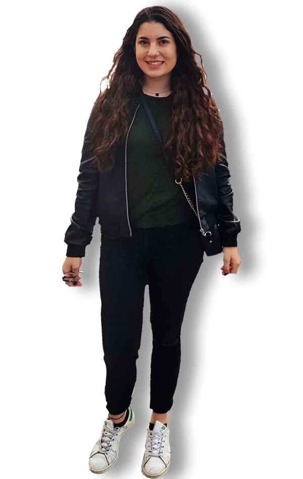

Antonia Sakellariou
HOME
ABOUT
CONTACT

HOME
Hello I'm
Antonia Sakellariou
I come from Syros, a small island of Cyclades.
Growing up by the sea I became a sailing athlete for over a decade now.
My greatest dream is to travel all over the world, especially India and Africa.